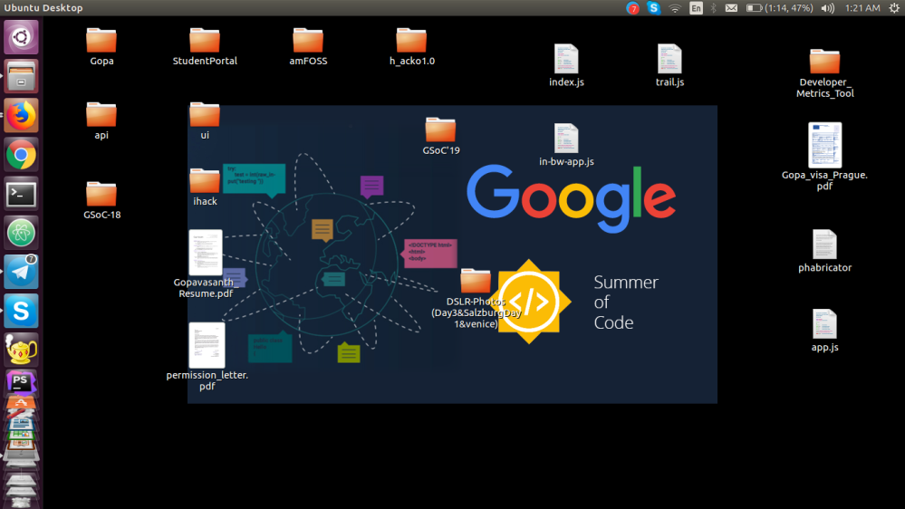
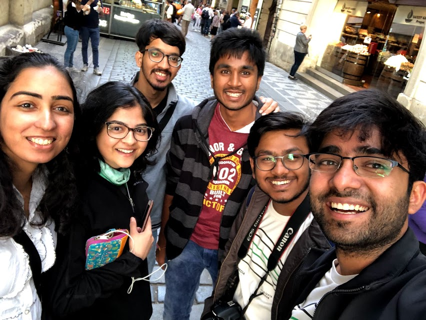

Into GSoC and WMF Hackathon 2019 !
Being an undergraduate in Computer Science at Amrita Vishwa Vidyapeetham, over the past couple of years my love for the field of Computer Science has grown exponentially. Being an active member of Free and Open Source(FOSS@Amrita) club at my university, I have acquired a various set of skills including analyzing and debugging of large code bases, developing problem-solving skills and organizing as well coordinating technical events.
In my first year, I applied to the Google Summer of Code 2018 through the Wikimedia Foundation but couldn’t achieve it, I got to know that I have to learn lot’s of things and continued staying involved with the various Wikimedia Foundation technical projects and discussions.
I have been involved in a couple of wiki projects “Season of RevisionSlider” a technical project with Wikimedia’s German team, and “MediaWiki Extension’s and Skins”. I have been contributing to MediaWiki organization since 2017 and worked on 30+ bugs reported in phabricator and most of them got merged, This made me analyze and get familiarized with the huge codebase.
I have acquired few skills in the process such as teamwork, code analysis and understanding the product development cycle. Conducting regular weekly meetings, sending status updates of the work and helping each other in all the tough times of the project is fantastic and also fun.
Mentoring the students from all over the world as a part of Google Code-in 2018 through Wikimedia Foundation is a fantastic experience, I have learned a lot’s of lessons from those school kids. I felt this is one of the great opportunity where I was able to help school students to get them started with open source contributions and bug fixing.
December arrived, I thought this is the right time to learn and explore more wikiprojects so that I can be a strong candidate for Google Summer of Code 2019 student, and my motivation changed my Desktop wallpaper and Mobile Wallpaper to Google Summer of Code background, Every time when I open my mobile or laptop my inspiration starts burning and doubles my focus to work on bugs and tasks, with this motivation initially I worked on multiple GSoC projects tagged projects and completed multiple micro-tasks, familiarized with multiple technologies in very short time (Flask..) unexpectedly I didn’t submit the proposal for the projects which I started working earlier.

I follow regular wiki mailing lists and Once I saw the project called VideoWiki and very fascinated to work with their projects, I have read much documentation of their projects and felt very excited to work with them, So I contacted VideoWiki team and discussed few ideas on VideoCutTool. Finally, I have submitted my GSoC proposal to VideoCutTool in GSoC‚Äô19 and got into GSoC‚Äô19 yay !!!! my hard work paid me off üôÇ
My application for the Wikimedia hackathon 2019 also got approved with the full scholarship, I was so excited to attend the Wikimedia Annual Developer summit conferance and hackathon at Prague.
This is the first WMF Hackathon I attended and I found it very fantastic, I loved it ❤️ I’m the youngest member attending this Conf and Hackathon, Working with the wiki community and discussing project ideas in person with the experts is amazing.
I found hacking üíª through the code for 3 continue days and developing something productive is a great learning experience. I have discussed few project ideas on Wikimedia Visual Editor with the Visual Editor Maintainers in person.
Involved in the discussions of a few MediaWiki technical projects and shared my ideas with them in the conference sessions. I Worked on a couple of Wikimedia phabricator tasks in the hackathon and submitted the patchsets along with C_Fish.
Worked to host my video cut tool (GSoC’19 project) on wikimedia toolforge with the help of few toolforge admins in the hackathon but couldn’t able to complete it due to lack of time, I will complete it sooner.
Not just writing a code but also having fun in wmhack gaming session ⚾️ and in cafe ☕️ is superb !
I Interacted with many wiki core devs, admins, mentors, designers, product managers in person made new friends and had a great time both in writing code and exploring Prague.

Hackathon went in very organised way and with perfect timing. A huge thanks to the Srishti Sethi, Rachel, Martin Urbanec and all the Wikimedia Czech team.
This is my first stay in the start hotels and having a fantastic breakfast everyday is superb as a vegan I found difficult to find vegan items.üòÖ
I felt very inspiring by intracting with few other developers by observing their habits and life style. I didn‚Äôt imagine as this wmhack goes in such a fanstatic way I‚Äôm more excited to attend more Wikimedia Conferences and Hackathons and hack üòâ
Now I’m planning to continue with my coding period of GSoC project, hope everything goes well